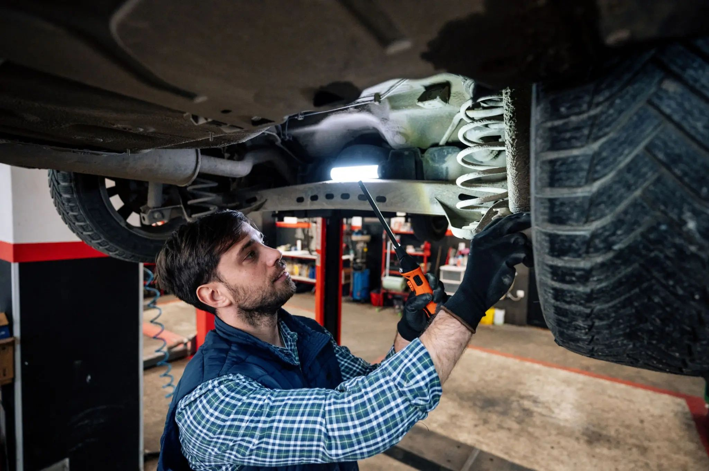
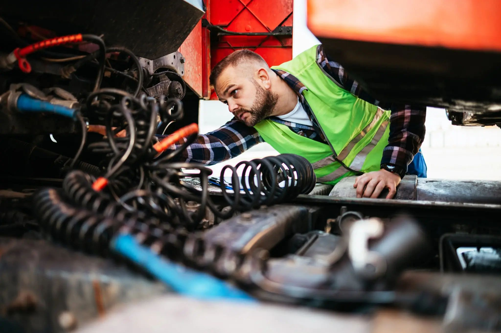

OUR STORYBuilt on experience.
Built on experience.
Driven by trust.
A family-owned Calgary shop serving drivers and the trucking industry since 1991.

WHO WE ARE
A shop with its hands on the work.
Calgary Spring and Suspension provides truck suspension repair, spring customization, replacement and re-arching. The business has grown through specialized knowledge, practical service and long-term customer relationships.
From passenger vehicles to commercial trucks and trailers, the team focuses on accurate diagnosis and reliable repairs. They also supply parts and services to the trucking industry across Alberta.
Contact the shopIN THE SHOP
Look beneath the surface.
A closer look at the type of work behind every dependable drive.


CALGARY, ALBERTA
Experience you can call on.
Talk with the team about your vehicle or visit the shop in NE Calgary.